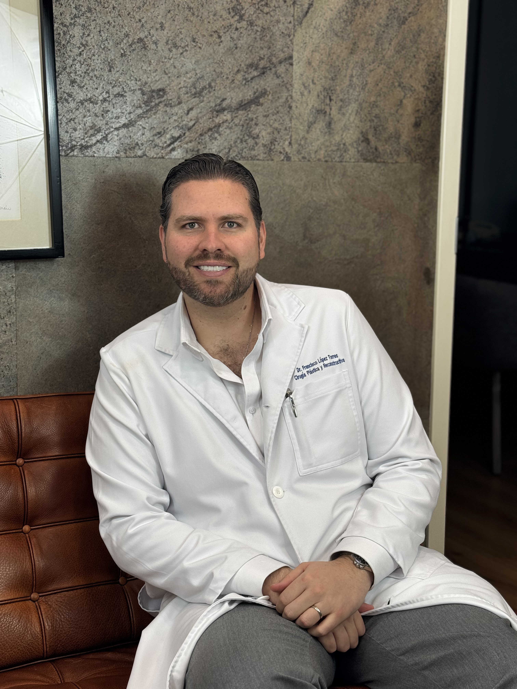

✦
Médico Cirujano
Universidad Anáhuac México Norte. Beca y Diplomado de Excelencia Académica. Diplomado en Excelencia en Medicina.

Cirujano plástico certificado en Ciudad de México. Práctica dedicada a la Cirugía plástica y reconstructiva con un enfoque humano, técnico y estético equilibrado.

Mi nombre es Francisco López Torres. Soy Médico Cirujano egresado de la Universidad Anáhuac México Norte y especialista en Cirugía Plástica, Reconstructiva y Estética formado en la Universidad Simón Bolívar de Barranquilla, Colombia, donde tuve el honor de fungir como Jefe de Residentes en mi último año de formación.
Mi entrenamiento incluye un Facial Plastic Surgery Fellowship realizado con el Dr. Masoud Saman (Saman Plastic Surgery, Dallas, Texas) y con el Dr. Demetri Arnaoutakis (Tampa, Florida), donde profundicé en cirugía plástica facial avanzada: Rinoplastía Ultrasónica, deep plane facelift, Blefaroplastía y rejuvenecimiento facial.
Cuento con experiencia en manejo de pacientes quemados, cirugía de mano, cirugía reconstructiva facial y corporal, así como cirugía plástica estética facial y contorno corporal. Cada día llego al consultorio con la misma convicción: cada paciente que confía en mí merece la mejor versión de mi trabajo, sin atajos, sin compromisos en seguridad y sin soluciones genéricas.
Mi enfoque se centra en escuchar profundamente. Antes de planear una cirugía, busco entender qué motiva a cada paciente, qué espera lograr y, sobre todo, qué no quiere alterar. Esa conversación clara es la base de un buen resultado.
La cirugía plástica exige actualización permanente. Mi formación combina las bases sólidas de la medicina mexicana con un fellowship internacional en cirugía plástica facial realizado en Estados Unidos.
Universidad Anáhuac México Norte. Beca y Diplomado de Excelencia Académica. Diplomado en Excelencia en Medicina.
Universidad Simón Bolívar, Barranquilla, Colombia. Jefe de Residentes CPRE.
Saman Plastic Surgery, Dallas, Texas y con el Dr. Demetri Arnaoutakis, Tampa, Florida.
Mi práctica está respaldada por la certificación del Consejo Mexicano de Cirugía Plástica y por mi membresía activa en las principales sociedades de cirugía plástica de América y el mundo.
Cirujano certificado por el Consejo Mexicano de Cirugía Plástica, Estética y Reconstructiva. Certificación N° 2531.
Miembro de la American Society of Plastic Surgeons (ASPS), la sociedad de cirugía plástica más grande del mundo.
Miembro de la Asociación Mexicana de Cirugía Plástica, Estética y Reconstructiva.
Miembro de la Sociedad Colombiana de Cirugía Plástica, Estética y Reconstructiva y del Colegio Médico Colombiano.
He publicado artículos científicos en revistas indexadas y colaborado en libros de referencia para cirujanos plásticos en formación.
Six-step Procedure for a Natural Navel. Plast Reconstr Surg Glob Open. 2024 Aug 30;12(8):e6112.
Para cobertura de amputación traumática de punta de pulgar. Rev. Col. Cirugía Plástica y Reconstructiva, 2022;28(1):49-55.
En la formación de residentes de Cirugía Plástica. Cirugía Plástica Ibero-Latinoamericana, Vol. 46 N° 2 de 2020.
For elective plastic surgery. Ciencia e Innovación en Salud, 2020. e83: 208-244.
Coautor colaborador del libro. Rev. Col Cirugía Plástica y Reconstructiva, 2022, 28(2). ISSN 0120-27229.
AMCPER, Sociedad Colombiana de Cirugía Plástica, Reuniones Interuniversitarias Latinoamericanas y simposios de microcirugía.
Como cirujano plástico, creo firmemente en una premisa simple: la cirugía no debe cambiar quién eres, debe ayudarte a verte y sentirte como realmente quieres ser. No persigo resultados que se vean operados ni busco impresionar con cambios extremos. Persigo armonía, naturalidad y elegancia, porque esos son los resultados que envejecen bien y siguen luciendo bellos años después.
Mi filosofía se sostiene sobre tres pilares: seguridad médica antes que todo, honestidad transparente en cada consulta y excelencia técnica en cada procedimiento. Si en algún momento detecto que un paciente busca algo que no le conviene, se lo digo directamente. Si la cirugía no es la respuesta correcta, también lo digo.
Trabajar con cuidado, con tiempo, con disciplina. Esa es mi manera de ejercer esta profesión.

Te diré con claridad si la cirugía es la solución adecuada o si existen alternativas mejores para tu caso particular.
Cada cirugía se planifica de forma personalizada, sin protocolos genéricos. Tu anatomía y objetivos guían la técnica.
Opero exclusivamente en hospitales con licencia sanitaria vigente, anestesiólogos titulados y protocolos rigurosos.
Seguimiento postoperatorio cercano durante semanas y meses, no solo el día de la cirugía.
Parte de mi vocación médica está dedicada a pacientes con malformaciones congénitas y secuelas de labio y paladar hendido. Creo firmemente que la cirugía plástica también es una herramienta de transformación social.
Clínicas ABC Amistad — Ciudad de México. Atención a pacientes con secuelas de labio/paladar hendido y malformaciones congénitas.
Fundación Reina Catalina — Barranquilla, Colombia. Atención a pacientes con labio/paladar hendido y malformaciones congénitas.
Recibí el Reconocimiento por Profesionalismo, Disciplina, Ética y Vocación de Servicio por parte del Hospital Central Militar y el Hospital Militar de Especialidades de la Mujer y Neonatología (Julio 2015).
Atiendo a pacientes en tres idiomas, lo que me permite ofrecer una consulta clara, cercana y sin barreras de comunicación a pacientes locales y de turismo médico.
Atención completa para pacientes nacionales y de toda Latinoamérica.
La consulta de valoración es el primer paso. Sin compromiso, con información clara y sin presiones.
Agendar valoración